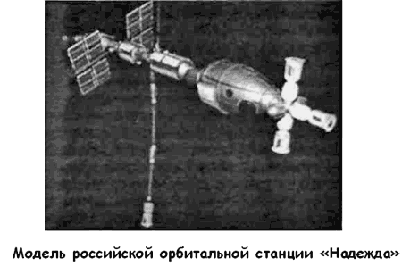

Орбитальные станции «Надежда» и «Русь»
Далеко не все согласны с тем, что у России с 2001 года нет собственной национальной станции. Проекты орбитальных баз, построенных на других принципах, нежели станция «Мир», уже появляются и еще будут появляться.
Например, Центральная научно-исследовательская лаборатория «Астра» Московского авиационного института подготовила проекты легкой (86 тонн) станции «Надежда», сравнимой по возможностям с «Миром» и рассчитанной на орбиты высотой от 375 до 400 километров, и тяжелой станции «Русь» (140,5 тонны), сопоставимой с «МКС».
Принципиальное отличие этих новых станций от всех предыдущих состоит в так называемой «вертикальной компоновке», которая, по утверждению разработчиков, позволит сократить затраты электроэнергии или рабочего тела двигателей маневрирования станции на 70–90 %. Это реализуется только за счет соответствующего расположения крупных модулей, солнечных батарей, выносных штанг и тросовых систем с концевыми грузами. Даже неизбежные возмущения можно будет парировать не работой двигателей, неизбежно сжигающих топливо, а перекачкой его и других жидкостей между неполными баками в разных концах станции или деформацией нежестких конструкций с внутренним трением.
Топливо же потребуется только на этапе начальной ориентации.
Высота орбиты минимального грузопотока определяется наименьшими затратами топлива для выведения станции, поддержания ее на этой орбите и расходами горючего для грузовиков, поднимающихся на эту орбиту с опорной (180–250 километров), с учетом разброса плотности атмосферы.
Для комплекса «Мир» и кораблей «Союз-ТМ» и «Прогресс» эта высота составляла 420–440 километров. Но если применять «Прогрессы» с электрическими ракетными двигателями, расход рабочего тела на такой перелет будет в пять раз меньше, чем для нынешних штатных двигателей.
Соответствующую экономию даст и переход на использование таких двигателей для ориентации и коррекции.
Другим средством малозатратного маневрирования являются механические и электромеханические тросовые устройства, активно разрабатываемые в последнее десятилетие и обеспечивающие как стыковку, так и необходимые инерционные характеристики при вращении станции вокруг ее центра масс. Мало того, они же, двигаясь в магнитном поле Земли, позволяют превращать механическую энергию движения станции в электрическую и наоборот.
В электропроводящем, вертикально ориентированном десятикилометровом тросе, летящем по круговой орбите высотой 420 километров и наклонением 51,6° (орбита станции «Мир»), наводится электродвижущая сила 1200 В, что позволяет снимать с него электрическую мощность 5 кВт. При этом на конструкцию действует тормозящая сила величиной в 1,2 Ньютона, способная за один виток уменьшить высоту орбиты 400-тонной станции на 30 метров. Если же подать на тот же проводник ток в противоположном направлении (от солнечных батарей мощностью 16 кВт), то возникнет разгоняющая сила в 1,6 Ньютона, с помощью которой можно не только компенсировать аэродинамическое сопротивление, но и увеличивать высоту орбиты.
Рассмотрим комплекс предложений лаборатории «Астра» на примере малой станции «Надежда».
Самоориентирующаяся в вертикальном положении станция разделена на жилую и технологическую зоны с постоянно обитаемыми и периодически посещаемыми отсеками.
Модули в основном создаются на базе уже отработанных конструкций орбитально-бытового отсека корабля «Союз» и функционально-грузового блока транспортного корабля снабжения. Последние — наиболее тяжелые, массой до 20 тонн — могут выводиться на околоземную орбиту либо заслуженными «Протонами», либо создающейся сейчас ракетой «Ангара».

Модули «Надежды» расположены линейно, один за другим.
Для перемещения людей и грузов предусмотрен сквозной внутренний коридор, при необходимости перекрываемый герметичными люками, а снаружи — «тропа космонавтов», монорельс с передвигающейся по нему кареткой.
В передней части станции должны разместиться стыковочные узлы для кораблей типа «Союз». За ними находится базовый биологический модуль весом 20–23 тонны и диаметром 9 метров, собираемый на орбите, на базе жесткого корпуса из надувных и трансформируемых конструкций.
Здесь персонал станции будет жить и работать, отсюда же управлять оборудованием в посещаемых отсеках. В жестком корпусе предусмотрено радиационное убежище, в котором космонавты укроются от солнечных вспышек. Здесь же размещены «спасательные шлюпки» — спускаемые аппараты, на которых обитатели «Надежды» смогут вернуться на Землю в случае серьезной аварии.
За биологическим модулем следуют технологический (для «сверхчистого» производства на орбите) и два оптических: один — для астрономических исследований, другой — для дистанционного зондирования Земли. Между ними, на специальном энергетическом модуле, расположены панели солнечных батарей.
На стыке технологического и астрофизического модулей закреплена тросовая система, обеспечивающая гравитационную стабилизацию станции. Причем один из «концов» представляет собой не трос, а гибкий тоннель, по которому космонавт может пройти в «груз» — кабину. Силовыми приводами тоннель изгибается, поднося кабину к нужной точке станции для осмотра и обслуживания.
На корме станции, за оптическим модулем, имеется второй стыковочный отсек, на который могут швартоваться пилотируемые «Союзы» и автоматические «Прогрессы».
Разработчики «Надежды» утверждают, что за 2–3 года при затрате весьма скромных средств (1–2 % от намеченных расходов на «МКС», а это 2,7 миллиарда долларов только в 2001 году) Россия получит свою национальную орбитальную станцию, и это даст ей возможность вернуться на передовые позиции в космосе.